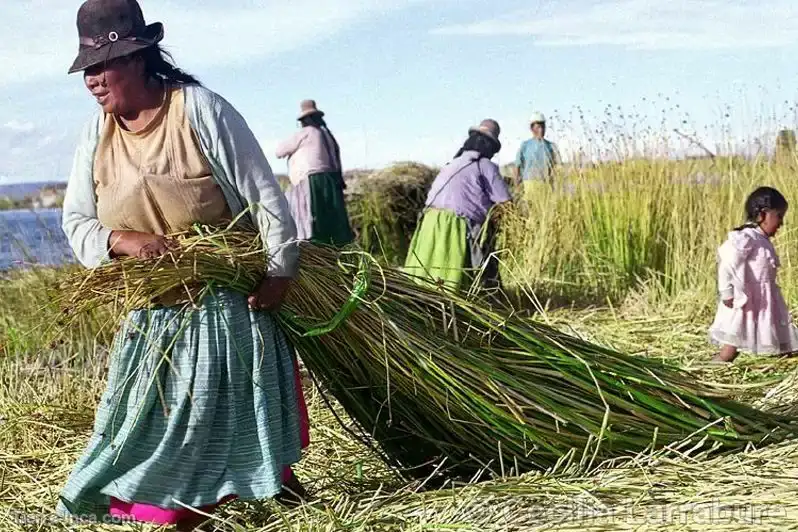
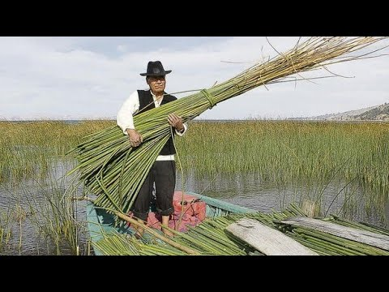
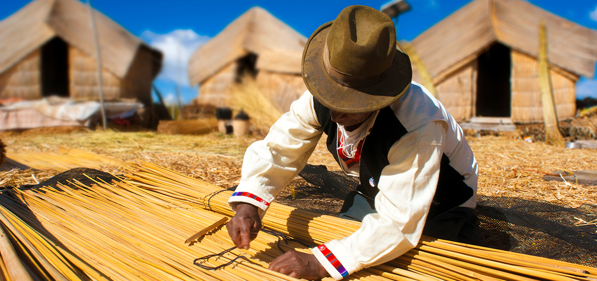
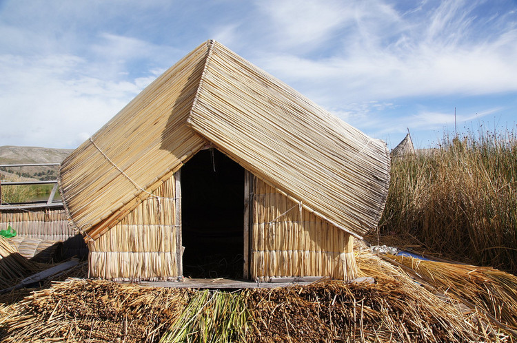
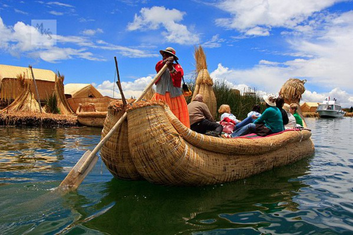

La totora es el material principal para la construcción de las islas flotantes. Los Urus la recolectan en las orillas del Lago Titicaca, seleccionando los tallos más resistentes. Luego se corta y se deja secar parcialmente para que pueda ser utilizada sin perder flexibilidad.

Una vez recolectada, la totora se agrupa en grandes bloques entrelazados. Estos bloques se colocan sobre capas naturales de raíces acuáticas llamadas “khili”, que sirven como base flotante. Esta estructura permite que la isla se mantenga estable sobre el agua.

Sobre la base inicial se van colocando capas sucesivas de totora. Estas capas deben renovarse constantemente porque la parte inferior se descompone con el tiempo. Así, la isla se mantiene en equilibrio y puede seguir creciendo.

Las casas de los Urus se construyen completamente con totora. Son estructuras ligeras que se adaptan al movimiento del agua. Debido a la humedad, deben ser reparadas y reconstruidas con frecuencia, manteniendo un ciclo continuo de mantenimiento.

Los barcos de totora son esenciales para la vida diaria. Se utilizan para la pesca, el transporte y el turismo. Estas embarcaciones también requieren mantenimiento constante, ya que la totora se desgasta con el uso y el contacto con el agua.